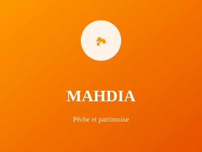

Ancienne capitale fatimide

Ancienne capitale fatimide, Mahdia est une ville côtière importante. Elle est réputée pour sa pêche, ses traditions ancestrales et ses richesses archéologiques qui remontent à plus de mille ans.